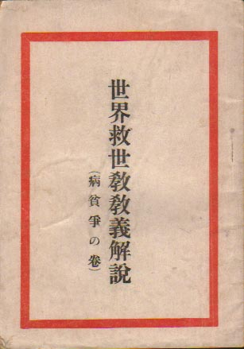
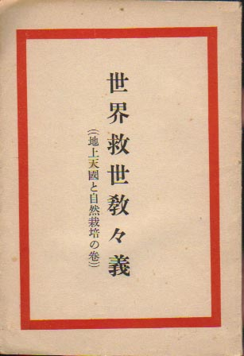

――― 岡 田 自 観 師 の 論 文 集 ――発行誌別
世界救世教教義

序文 今度、本教出版部客員松井誠勲氏が、本教に関する同氏独特の、批判解説を試みた原稿〔略〕が出来たから、見てくれというので一読したところ、全般に渉（わた）って肯綮（こうけい）を得ている好記述なので、私も大いに意を得、出版を勧めたのである。 特に、最後の医学に対する、世界各国の専門家の直言に至っては、よくも査（しら）べ上げたものと思うと共に、是非世人に知らせたいとここ推薦する次第である。由来日本人は舶来崇拝の癖が、いまだ抜け切っていない今日、最も好適の著というべきであろう。 昭和二十六年五月十五日 （自観識）
